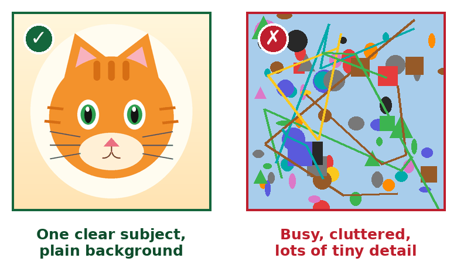
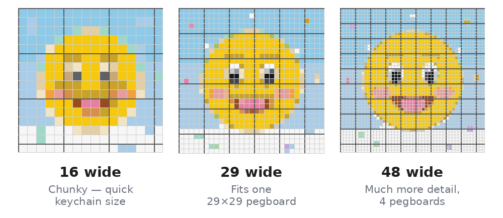

당신의 사진을, 실제로 만들 수 있는 비즈 도안으로
슬라이더를 드래그해 비교해 보세요. 목업이 아니라 이 도구가 실제로 만든 도안입니다 — 40 × 40 비즈 · 21가지 색상 · 비즈 1,600개, 정확한 구매 목록 포함.

 사진
도안
사진
도안
- ✓ 가입 불필요
- ✓ 100% 브라우저에서 실행 — 사진이 업로드되지 않습니다
- ✓ 무료로 시작
1 사진 선택
여기에 이미지를 놓거나, 탭해서 선택하세요
PNG, JPG, WebP 지원. 단순하고 대비가 강한 사진이 가장 좋습니다.
예시 — 이 도구의 실제 결과물
아래 도안은 모두 옆 사진으로 이 생성기가 실제로 만든 것입니다. 보이는 그대로 얻습니다: 같은 색상, 같은 코드, 같은 개수.
원본
도안💡 반려동물 초상과 얼굴: 너비 40개 이상을 쓰세요 — 눈, 수염, 털의 음영이 살아남으려면 디테일이 더 필요합니다.
 원본
원본 도안
도안💡 풍경은 디테일이 많습니다. 하늘, 산, 물 같은 큰 형태는 너비 40에서도 잘 읽힙니다. 사진 같은 풍경은 더 넓게 (Pro 또는 Studio).
 원본
원본 도안
도안💡 단색 배경에 강렬한 피사체 하나가 가장 쉬운 성공법 — 작은 너비에서도 선명하게 유지됩니다.
 원본
원본 도안
도안💡 로고, 아이콘, 만화풍 아트는 거의 모든 크기에서 깔끔하게 변환됩니다 — 평평한 색상과 굵은 윤곽은 비즈에 완벽합니다.
크기 가이드 — 너비가 실제로 뜻하는 것
설정하는 너비는 가로 방향 비즈 수입니다. 표준 미디 비즈는 개당 5 mm라서, 시작 전에 완성 크기를 쉽게 계산할 수 있습니다:
| 설정 너비 | 완성 크기* | 필요한 비즈† | 디테일 수준 | 적합한 용도 |
|---|---|---|---|---|
| 비즈 20개 | ≈ 10 cm (4″) | ≈ 400 | 큼직함 — 큰 형태만 가능 | 키링, 참, 자석 |
| 비즈 29개 | ≈ 14.5 cm (5.7″) | 841 | 단순한 그림에 선명 | 표준 페그보드 정확히 1장 — 코스터, 책상 소품 |
| 비즈 48개 | ≈ 24 cm (9.4″) | ≈ 2,300 | 좋음 — 초상 가능 | 작은 벽 장식, 액자 선물 (무료 플랜 최대) |
| 비즈 100개 | ≈ 50 cm (20″) | ≈ 10,000 | 사진 같은 디테일 | 큰 벽 장식 (Pro) |
| 비즈 200개 | ≈ 100 cm (39″) | ≈ 40,000 | 최대 디테일 | 포스터 크기 작품 (Studio) |
* 가로 너비 기준이며, 높이는 사진 비율을 따릅니다. † 정사각형으로 완전히 채운 도안 기준 — 정확한 개수는 만드는 도안마다 아래 구매 목록에 표시됩니다.
💡 경험 법칙: 도안이 작을수록 사진은 더 강렬해야 합니다 — 큰 피사체 하나와 강한 대비. 너비 100에서 멋진 복잡한 사진도 너비 20에서는 뭉개집니다.
단계별 가이드 — 사진에서 완성품까지
퓨즈 비즈가 처음인가요? 이 다섯 단계를 따르면 실패하지 않습니다.
1 좋은 사진 고르기
피사체 하나가 뚜렷하고, 배경이 단순하며, 대비가 강한 사진을 고르세요. 얼굴, 반려동물, 로고, 만화풍 아트가 가장 좋습니다. 작은 디테일이 많은 복잡한 장면은 비즈 크기에서 뭉개집니다 — 사진이 복잡하면 먼저 피사체 주변을 바짝 자르세요.

2 너비 설정
너비는 완성품의 가로 비즈 수이며, 높이는 사진을 따라 자동으로 정해집니다. 비즈가 많을수록 디테일은 늘지만, 비즈도 시간도 비용도 늘어납니다. 기준: 키링은 너비 20–30, 코스터는 페그보드 1장에 정확히 29, 책상 소품은 40–60, 벽 작품은 80 이상. 완성 크기는 위 크기 가이드를 보세요.

3 도안 읽기
칸 하나가 비즈 하나입니다. 각 칸에 인쇄된 코드 (P01 같은)는 그 비즈의 색상 코드로, 구매 목록의 코드와 같습니다. 비즈 5개마다 굵은 선이 있어 하나씩이 아니라 다섯 개씩 셀 수 있습니다. 격자선과 코드는 도안 위에서 켜고 끌 수 있습니다.

4 목록으로 비즈 구매
도안 아래에 구매 목록이 있습니다: 모든 색상의 코드, 이름, 정확한 개수, 전체 비즈 수, 표준 29 × 29 페그보드가 몇 장 필요한지. 색상마다 약 10% 여유를 사세요 — 비즈 몇 개는 항상 굴러다닙니다.

5 다운로드, 인쇄, 만들기
도안을 PNG로 다운로드해 화면을 보며 만들거나, 인쇄하세요. 인쇄할 때는 100% / "실제 크기"를 선택하세요 — "페이지에 맞춤"은 격자를 줄여 페그보드와 맞지 않게 됩니다. Studio 플랜의 PDF 보드 시트는 큰 도안을 페그보드 1장당 1페이지로 나누고, 모든 페이지에 행·열 번호가 있습니다.

🏁 마무리: 다림질 단계
비즈를 다 놓으면 유산지(다림질 종이)를 덮고 중간 온도로 다리미를 천천히 원을 그리며 움직여, 비즈 윗부분이 녹아 붙을 때까지 다립니다. 평평하게 식히세요 — 무거운 책을 올리면 말리지 않습니다. 공예는 이게 전부입니다: 놓기, 다리기, 식히기, 완성.
기능 소개
비즈 도안 메이커는 어떤 사진이든 바로 만들 수 있는 퓨즈 비즈 도안으로 바꿉니다 — 페그보드에서 따라 만드는 바로 그 도안을 몇 초 만에 생성합니다.
- 사진 → 도안, 자동으로. 사진을 올리면 모든 픽셀이 가장 가까운 비즈 색상에 매칭됩니다 — 픽셀 단위 수작업이 없습니다.
- 실제 64색 비즈 팔레트. 색상은 표준 Perler / Hama 팔레트에서 오며, 각 색상에 코드와 이름(H05 빨강 같은)이 있고, 지각(Lab) 거리로 매칭해 숫자만이 아니라 눈으로 봐도 맞습니다.
- 비즈 구매 목록. 모든 색상의 정확한 개수 — 코드마다 몇 개가 필요한지 — 와 전체 비즈 수를 받습니다.
- 페그보드 추정. 완성품에 표준 29×29 페그보드가 몇 장 필요한지 알려 줍니다.
- 다운로드 가능한 도안. 완성 도안을 격자선과 모든 칸의 색상 코드가 인쇄된 PNG로 내보내 바로 만들 수 있습니다.
- 100% 프라이빗. 모든 것이 브라우저에서 로컬로 실행됩니다. 사진이 서버에 업로드되지 않습니다.
- 세 가지 플랜. 무료는 너비 48개까지의 도안, 기본 팔레트, 워터마크 있는 내보내기를 제공합니다. Pro와 Studio는 너비 한도를 높이고 전체 팔레트, CSV 비즈 목록, 인쇄용 PDF 보드 시트, 일괄 모드를 엽니다 — 각 플랜 내용은 아래 가격을 보세요.
사용 방법
- 1사진 선택
PNG, JPG, WebP 아무거나 넣으세요. 단순하고 대비가 강한 사진이 가장 좋습니다. - 2너비 설정
완성품이 몇 개 비즈 너비일지 고르세요 — 높이는 자동으로 정해집니다. - 3도안 받기
색상 코드가 있는 도안을 보고, 색상별 개수를 확인하고, PNG를 다운로드하세요.
가격
무료로 시작하세요. 더 큰 도안, 전체 색상 팔레트, 인쇄해서 만들 수 있는 파일이 필요할 때 업그레이드하세요.
무료
$0
- 도안 너비 최대 비즈 48개
- 기본 64색 팔레트 (Perler / Hama 코드)
- 페이지 도안에서 개수 확인
- 작은 워터마크가 있는 PNG 내보내기
- 계정 불필요, 영구 사용
Pro
$4.99/month
- 도안 너비 최대 비즈 120개
- 전체 100색 팔레트 (Perler + Hama + Artkal)
- 워터마크 없음, 고해상도 PNG 내보내기
- 비즈 목록을 다운로드 가능한 CSV로 — 인쇄용 구매 목록
- 무료의 모든 기능 포함
Studio
$9.99/month
- 도안 너비 최대 비즈 200개
- PDF 보드 시트 — 페그보드별 페이지 나누기, 인쇄용 행·열 좌표 포함
- 일괄 변환 — 여러 사진을 한 번에 변환
- 만든 도안에 대한 상업 라이선스
- Pro의 모든 기능 포함
키는 이 기기에만 저장되며, 플랜이 즉시 활성화됩니다.
자주 묻는 질문
비즈와 페그보드가 얼마나 필요한가요?
도안 아래 구매 목록이 모든 색상을 정확히 세고, 전체 비즈 수와 표준 29 × 29 페그보드가 몇 장 필요한지도 알려 줍니다. 예를 들어 위 고양이 도안은 21가지 색상에 비즈 1,600개, 페그보드 4장이 필요합니다. 팁: 색상마다 약 10% 여유를 사세요 — 비즈 몇 개는 항상 굴러다닙니다.
사진이 서버에 업로드되나요?
아니요. 모든 것이 브라우저에서 로컬로 실행됩니다 — 사진이 기기를 벗어나지 않고, 아무것도 저장되지 않으며, 계정도 없습니다. 탭을 닫으면 사라집니다.
무료, Pro, Studio의 차이는 무엇인가요?
무료: 너비 48개까지의 도안, 기본 64색 팔레트, 작은 워터마크가 있는 PNG 내보내기. Pro($4.99/월): 너비 120까지, 전체 100색 팔레트, 워터마크 없는 내보내기, 다운로드 가능한 CSV 비즈 목록. Studio($9.99/월): 너비 200까지, 인쇄용 PDF 보드 시트, 일괄 변환, 상업 라이선스. 전체 비교는 위 가격을 보세요.
다운로드한 PNG에 왜 워터마크가 있나요?
무료 플랜 내보내기에는 사람들이 도구를 찾을 수 있도록 아래쪽에 작은 "Made with Bead Pattern Maker" 띠가 들어갑니다. Pro와 Studio 내보내기는 완전히 깨끗합니다.
인쇄한 격자가 페그보드와 맞지 않습니다. 무엇이 잘못됐나요?
프린터가 페이지를 확대/축소했습니다. 100% / "실제 크기"로 다시 인쇄하고 "페이지에 맞춤"을 끄세요 — 인쇄된 칸 하나가 비즈 하나와 같아야 합니다. 아니면 화면을 보며 만들거나, Studio의 PDF 보드 시트(페이지당 페그보드 1장, 행·열 번호 포함)를 쓰세요.
휴대폰에서도 쓸 수 있나요?
네 — 최신 모바일 브라우저에서 모두 작동하고, 앱처럼 설치할 수도 있습니다 ("홈 화면에 추가"를 찾으세요). 설치 후에는 오프라인에서도 작동합니다. 사진은 컴퓨터에서처럼 휴대폰 안에 그대로 남습니다.